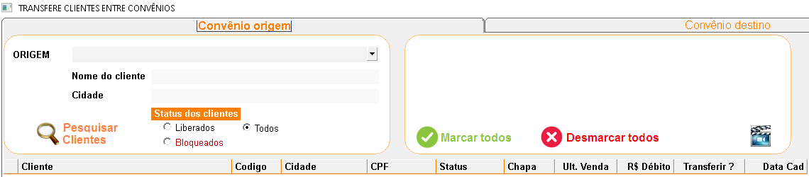
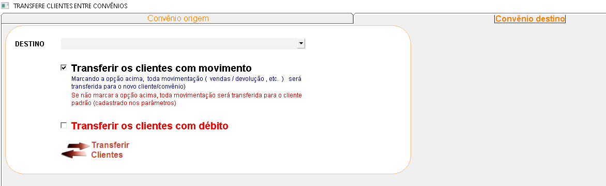

É uma maneira de transferir clientes de um convênio para outro. Aperte no topico que deseja para conhecer
a
funcionalidade de cada opção.
+Qual o procedimento para transferir um cliente?
No sistema:
- Selecione o convênio de origem, informe o nome e/ou a cidade, o status do cliente, o convênio de
destino
e se vai transferir a movimentação financeira do cliente.
- Depois de selecionar todos os clientes a serem transferidos, clique no botão "Transferir" para
concluir
a operação.
OBS.: As informações sobre cada campo estão no final da página.
+Descrição dos campos da transferência de clientes - Convênio de
Origem

- Origem: Informe o convênio de origem.
- Nome do cliente: Informe o nome do cliente.
- Cidade: Informe a cidade.
- Status do cliente: Informe a situação do cliente na sua empresa.
- Pesquisar clientes: Para pesquisar algum cliente que não tenha a informação do
convênio
a que ele pertence.
- Marcar todos: Selecione se deseja marcar todos os clientes cadastrados no convênio.
- Desmarcar todos: Selecione se desejar desmarcar todos os clientes cadastrados no
convênio.
+Descrição dos campos da transferência de clientes - Convênio de
Destino

- Destino: Informe o convênio de destino.
- Transfere os clientes com movimento: Transfere toda a movimentação do cliente.
- Transfere os clientes com débito: Transfere todos os débitos do cliente.